|
2003年7月4日
黑暗精靈魔法動畫
來源：Lineage
Gameabout
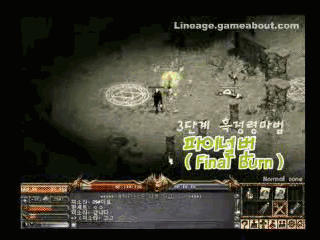
Lineage Gameabout製作了黑暗精靈的魔法動畫，施法者應該是GM的角色，到最後還有搞笑鏡頭呢！
閣下必須安裝DivX
5.05方可觀看，黑暗精靈魔法動畫的下載連結為：
http://myweb.hinet.net/home1/awiu/movie_dmagic.zip
黑暗精靈武器資料
來源：Lineage
Playforum
英文翻譯：Lineage
Compendium
以下的武器皆為雙手，有星號(*)的代表在商店中沒有售賣，似乎黑暗精靈並不能裝備盾牌：
雙刃(Double Blades)
藍色雙刃(Old Light Blades)
1000金幣，6/4，雙手，攻擊成功+2，重量20
*銀雙刃(Silver Blades)
8/5，雙手，攻擊成功+1，銀製，重40
鋼鐵雙刃(Strong Steel Blades)
3000金幣，8/5，雙手，攻擊成功+1，重量30，等級限制5
影之雙刃(Shadow Blades)
8000金幣，10/5，雙手，攻擊成功+1，重量50，等級限制10
短雙刃(Short Blades)
20,000金幣，12/6，雙手，攻擊成功+1，重量60，等級限制15
*黑暗雙刃(Dark Blades)
8/5，雙手，攻擊成功+2，重量20，等級限制15
大馬士雙刃(Damascus Blades)
45,000金幣，14/8，雙手，重量70，等級限制30
*黑耀雙刃(Darklight Blades)
12/10，雙手，攻擊成功+2，重量60，等級限制30
*暗王雙刃(Darklord Blades)
13/10，雙手，額外攻擊點數+2，攻擊成功+2，重量90，等級限制45
爪子(Claws)
藍色爪子(Old Light Claws)
2,000金幣，5/5，雙手，攻擊成功+2，重量30
*銀爪子(Silver Claws)
10/9，雙手，額外攻擊點數+1，銀製，重量40
鋼鐵爪(Strong Steel Claws)
5,000金幣，7/7，雙手，攻擊成功+1，重量30，等級限制5
影之爪(Shadow Claws)
10,000金幣，10/9，雙手，攻擊成功+1，重量60，等級限制10
短爪(Short Claws)
24,000金幣，13/12，雙手，攻擊成功+1，重量80，等級限制15
*黑暗爪子(Dark Claws)
8/5，雙手，攻擊成功+2，重20，等級限制15
大馬士爪(Damascus Claws)
50,000金幣，16/14，雙手，重量80，等級限制30+
*黑耀爪子(Darklight Claws)
12/10，雙手，攻擊成功+2，重量60，等級限制30
*暗王爪子(Darklord Claws)
13/10，雙手，額外攻擊點數+2，攻擊成功+2，重量90，等級限制45
遠距離武器(Ranged Weapons)
飛標(Sting)
2金幣，10/10，重量1（投擲物）
銀飛標(Silver Sting)
3金幣，8/8，銀製，重量1（投擲物）
重飛標(Heavy Sting)
4金幣，14/14，重量2（投擲物）
飛標手套(Gauntlet)
10,000金幣，2/2，+1攻擊成功，重量20（投擲飛標必須）
*黑暗十字弓(Dark Crossbow)
2/2，雙手，攻擊成功+2，重量30，等級限制15，妖精也可使用
*黑耀十字弓(Darklight Crossbow)
3/2，雙手，攻擊成功+2，重量80，等級限制30，妖精也可使用
*暗王十字弓(Darklord Crossbow)
4/3，雙手，額外攻擊點數+2，攻擊成功+1，重量130，等級限制45
黑暗精靈專用防具
來源：Lineage
Playforum
英文翻譯：Lineage
Compendium
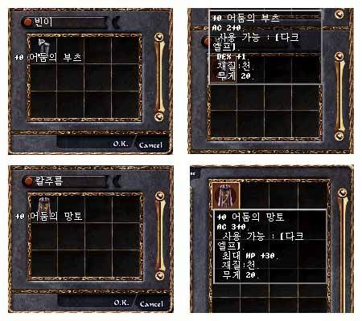
影之長靴(Shadow Boots)：-2防禦，黑暗精靈專用，敏捷上限+1，重量20
影之披風(Shadow Cloak)：-3防禦，黑暗精靈專用，體力上限+30，重量20
黑暗精靈的出生地 - 沉默洞穴
來源：Lineage
Playforum
英文翻譯：Lineage
Compendium
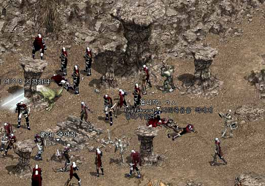
黑暗精靈的出生地名為沉默洞穴(Silence Cave)，位置在龍之谷的地底。在沉默洞穴與龍之谷有樓梯相通，似乎黑暗精靈有一段很艱辛的旅程，因為他們一離開沉默洞穴，便會遇上龍之谷強勁的怪物。
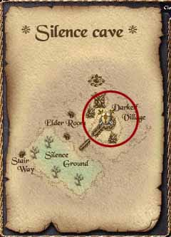
在沉默洞穴中亦有NPC商人會售賣各種新手道具及黑暗精靈裝備，以下裝備只有黑暗精靈才能裝備，能力值取自NewsPos：
- 藍色雙刃(Old Light Blades)
1000金幣，6/4，雙手，攻擊成功+2，重量20
- 鋼鐵雙刃(Strong Steel Blades)
3000金幣，8/5，雙手，攻擊成功+1，重量30，等級限制5
- 影之雙刃(Shadow Blades)
8000金幣，10/5，雙手，攻擊成功+1，重量50，等級限制10
- 短雙刃(Short Blades)
20,000金幣，12/6，雙手，攻擊成功+1，重量60，等級限制15
- 大馬士雙刃(Damascus Blades)
45,000金幣，14/8，雙手，重量70，等級限制30
- 藍色爪子(Old Light Claws)
2,000金幣，5/5，雙手，攻擊成功+2，重量30
- 鋼鐵爪(Strong Steel Claws)
5,000金幣，7/7，雙手，攻擊成功+1，重量30，等級限制5
- 影之爪(Shadow Claws)
10,000金幣，10/9，雙手，攻擊成功+1，重量60，等級限制10
- 短爪(Short Claws)
24,000金幣，13/12，雙手，攻擊成功+1，重量80，等級限制15
- 大馬士爪(Damascus Claws)
50,000金幣，16/14，雙手，重量80，等級限制30+
- 飛標(Sting)
2金幣，10/10，重量1（投擲物）
- 銀飛標(Silver Sting)
3金幣，8/8，銀製，重量1（投擲物）
- 重飛標(Heavy Sting)
4金幣，14/14，重量2（投擲物）
- 飛標手套(Gauntlet)
10,000金幣，2/2，+1攻擊成功，重量20（投擲飛標必須）
另外，黑暗精靈有夜視功能，可以透過遊戲選項中打開或關閉，以下是關閉與開啟夜視功能的分別：
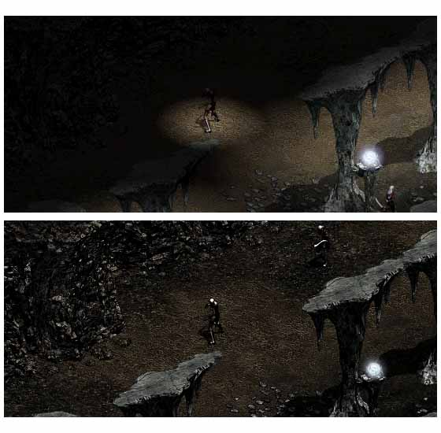
假如你覺得龍之谷對於新手來說太過困難，在沉默洞穴中亦有NPC會傳送玩家到隱藏之谷。
實戰夢幻之島
來源：Lineage
Playforum
英文翻譯：Lineage
Compendium
Lineage Playforum報告目前夢幻之島的區域仍是普通區域，攻擊人是會變紫的．．．
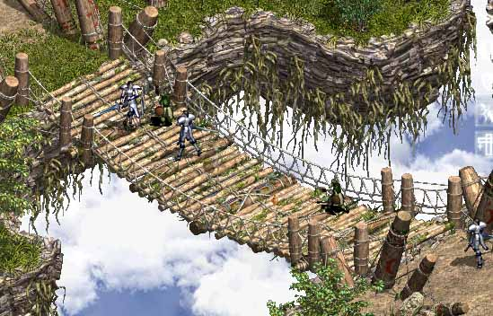
玩家在傳送後會在島上的南方（6點鐘方向）開始，在那裡有4個有橋連結的主要島嶼。
在南方的島嶼周圍都有殺人峰與夢想編織者，很多怪物雖然擁有相同的外表，但實力則有高低之分，例如那裡會有很強的瘋狂兔子，而獨角獸是例如外，因為牠一定是很強。
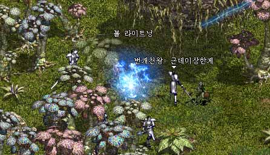
獨角獸的強度大約與熔岩高侖怪差不多，但有更多的HP。而守衛者盔甲(Guardian
Armor)不會被物理攻擊所傷害，因為只可以用魔法將它清除。球狀閃電(Ball
Lightning)與夢想編織者(Dream Weaver)的強版可以一下造成300HP的傷害。
在東面的島嶼上有不同強度的火炎蛋與火蜥蝪，而西面的則有冰高崙及冰人。該名記者成功的從冰高崙得到白武，但壞了9次劍及花了超過100瓶紅水。
在島上會出現巨大元素首領（例如巨大火元素），他們大約有飛龍的強度，該名記者沒有使用魔法屏障，結果兩下便死了。那些首領會掉祝防武，戒指與腰帶。
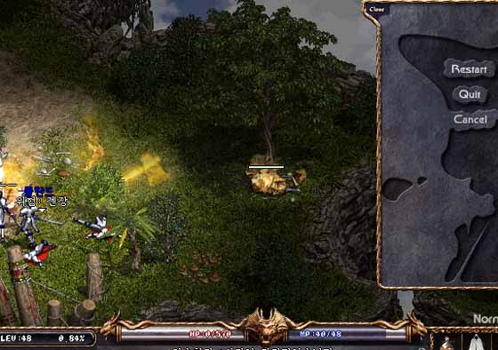
獨角獸的反面 - 夢魘？
來源：Lineage
Playforum
英文翻譯：Lineage
Compendium
Lineage Playforum報導假如你在韓國測試伺服器上，對獨角獸使用相消術的話，牠會變成夢魘。不過，此夢魘是超強的頭目，牠會掉隱斗，瑟劍及腰帶。當然，在正式推出時是絕對有可能更改的。
黑暗精靈15級任務
來源：Lineage
Playforum
英文翻譯：Lineage
Compendium
1.
在沉點洞穴的中央有數名黑暗精靈守衛，與其中一名對話可以開始任務。
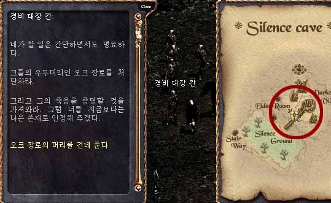
2.
他會要求你取得妖魔長者的頭顱，牠會在沉默洞穴西南方樓梯上的地面出現，你要將牠殺死。
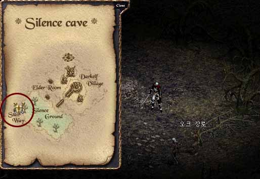
3.
在得到妖魔長者的頭顱後帶回給黑暗精靈守衛可以取得一個袋子，打開後會得到影之面具及精靈水晶：黑暗石提煉(Bring
Stone)。此魔法對於黑暗精靈是非常重要的，你對黑暗石(Dark
Stone)使用此魔法時，黑暗石有可能會消失，或變成高一個等級的黑暗石，而高級的黑暗石亦可以繼續提煉成為更高級的。黑暗石是製造黑暗精靈道具的主要材料。
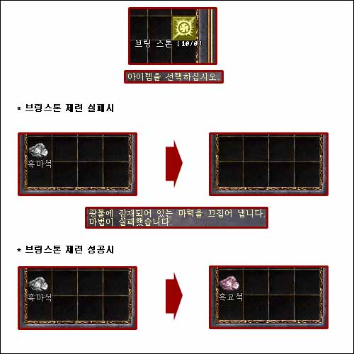
黑暗精靈內置變身？
來源：NewsPos
英文翻譯：Lineage
Compendium
在韓測上的變身表中加入了45級殺手的變身。另外NewsPos的記者發覺黑暗精靈好像永遠都在變身狀態，因為對沒有變身玩家會攻擊的怪物不會對黑暗精靈攻擊。
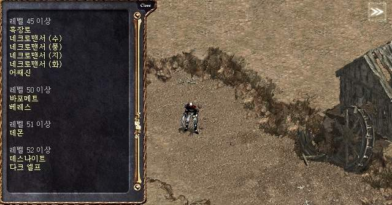
黑暗精靈道具製作
來源：NewsPos
英文翻譯：Lineage
Compendium
NewsPos報導有三種雙刃，三種爪及兩種十字弓可以透過沉默洞穴的NPC制作。
暫時我們亦不知道黑暗石(Bring Stone)的系統怎樣運作，但我們估計Bring
Stone是提煉黑暗石的魔法，每次提煉黑暗石時，成功後黑暗石會提升一級，失敗時便會消失。最基本的黑暗石我們暫時叫做"一級黑暗石"，而較高級的則為"二級黑暗石"及"三級黑暗石"。以下為目前NPC可以製作的道具與材料：
- 影之雙刃(Shadow Blades)
一級黑暗石(100)，金屬塊(10)，高級皮革(20)
- 短雙刃(Short Blades)
影之雙刃，二級黑暗石(100)，三級黑暗石(5)，金屬塊(20)，高級皮革(20)
- 大馬士雙刃(Damascus Blades)
影之雙刃，一級黑暗石(50)，二級黑暗石(20)，三級黑暗石(3)，鑽石(1)，金屬塊(10)，高級皮革(20)
- 影之爪(Shadow Claw)
一級黑暗石(100)，二級黑暗石(5)，金屬塊(10)，高級皮革(10)
- 短爪(Short Claw)
影之爪，二級黑暗石(100)，三級黑暗石(10)，金屬塊(10)，高級皮革(10)
- 大馬士爪(Damascus Claws)
影之爪，一級黑暗石(40)，二級黑暗石(30)，三級黑暗石(1)，鑽石(1)，金屬塊(10)，高級皮革(10)
- 影之十字弓(Shadow Crossbow)
二級黑暗石(100)，三級黑暗石(10)，金屬塊(10)，高級皮革(30)
- 短十字弓(Short Crossbow)
二級黑暗石(100)，三級黑暗石(20)，金屬塊(10)，高級皮革(30)
|